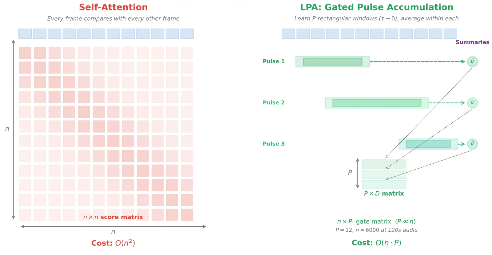

Attention is the engine of modern AI. It is also expensive. A new method replaces most of it with something simpler and faster for speech recognition running on your phone or laptop.
What attention actually does
When a large language model reads a sentence, it does not process words in order. It calculates a relationship between every word and every other word simultaneously. That matrix of relationships, called attention, is what allows the model to understand that "it" in "the trophy didn't fit in the suitcase because it was too big" refers to the trophy and not the suitcase. Attention is why modern language models are so much better than anything that came before.
This idea turned out to be useful far beyond text. Speech recognition works the same way now. Take audio, slice it into tiny time windows, and treat each slice the way you would treat a word. Let the model calculate relationships across all of those slices. At the shallow layers of the network, this captures acoustic patterns. At the deeper layers, it captures something closer to language itself.
Why it breaks on your phone
The problem is cost. Every word to every other word means the computation grows with the square of the length. Double the audio, quadruple the work. For a server with hundreds of chips running in parallel, that is manageable. For the phone in your pocket or the laptop on your desk, it is a wall.
The question the paper asks
My new paper asks a different question: how much of that attention is actually necessary?
The hypothesis is that most of what happens in the early layers of a speech model does not need the full machinery. A phoneme occupies a contiguous stretch of time. You do not need to compare it against every other moment in a two-minute recording to know what sound it is. You just need to know where it lives and how wide it is. A simpler operation -- a learned pulse that defines a window of time and averages what is inside -- should be enough.
The fix
The method, called a Learnable Pulse Accumulator, replaces attention with exactly that. Instead of computing pairwise relationships, each layer learns a small set of time windows. At inference, those windows collapse to binary: a position is either inside a pulse or it is not. All the operations involved are ones that mobile chips are already optimized for.

Replacing 8 of 12 layers in a standard speech recognition model with this approach gives a 3.27x speedup on 2 minutes of audio running on an Apple M4 Pro laptop. Word error rate goes up by about 7 percentage points over the full-attention baseline, which is meaningful but not fatal, and there are clear reasons it should be reducible with more work.
What the cross-validation tells you
The more interesting result is the cross-validation. When the same replacement is applied to a purely acoustic model -- one that never has to produce words, just clean up sound -- all 16 layers can be replaced without the model collapsing. That tells you something specific: the wall you hit in speech recognition is not a mathematical limitation of the approach. It is a property of language. The deep layers of a language-capable model are doing something that simple window averaging genuinely cannot replicate.
The recipe
The second contribution is practical: a recipe for doing this replacement without retraining from scratch. You run a diagnostic pass that ranks each layer by how hard it is to approximate, then replace them in order from easiest to hardest. The model stays useful throughout the process, and you stop when the quality tradeoff is no longer worth it. This works on any pretrained transformer.
Why it matters
The hope is that on-device speech recognition -- the kind that runs entirely on your phone, without sending audio to a server -- becomes meaningfully more capable as a result. The paper is the first step.
Full paper: https://zenodo.org/records/18991294